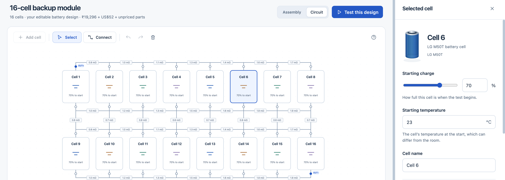
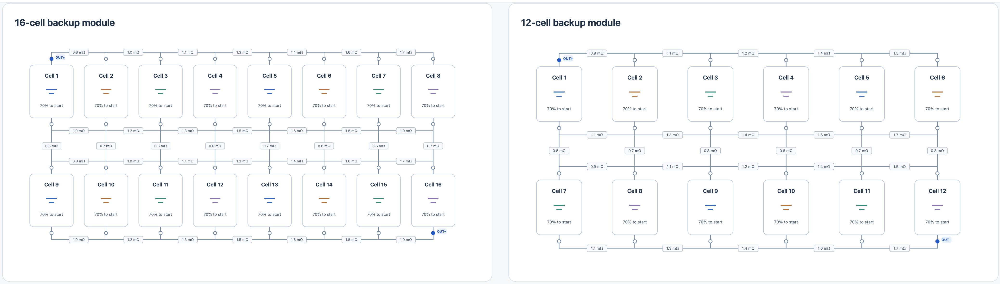

VOLT-FORGE connects every battery design decision to what it physically changes
A battery design is scattered across datasheets, circuit tools, CAD and spreadsheets. Swap one copper link and current sharing, heat and cost all shift, and you usually find out on the bench. So we took one real job: keep a Raspberry Pi 5 gateway alive for 10 minutes at 25 W.
Students can't afford to burn parts just to learn what a bad connection does. Engineers can't afford to learn it late. Here you wire a real circuit, change one thing and see exactly what that decision changes, before spending a rupee.
Published LG M50T cell data and a local app. For the Pi job, 2 cells cleared all 33 required cases, with the busiest cell at 5.33 A against a 7.275 A limit, even with a mismatched cell in any position.


Every number comes from a circuit and heat solver, never a chatbot, and each run checks that heat matches electrical loss. Real-cell data showed cooling changes from rig to rig, so temperature stays a range, not a promise.
Testing what you drew is the easy part. Find the smallest design rebuilds the circuit at every size, tests each one and shows what survives. Our Pi backup went from 4 cells to 2, at half the cell cost and mass.
to build all of it, from a measured dataset to the full app: 100 person-years, about 2% of AspenTech's yearly R&D. Free for students, paid for labs.